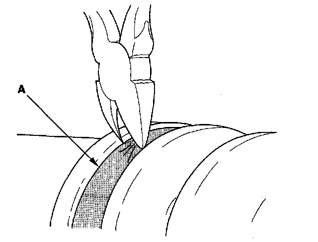
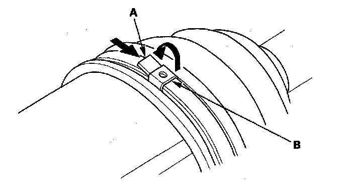
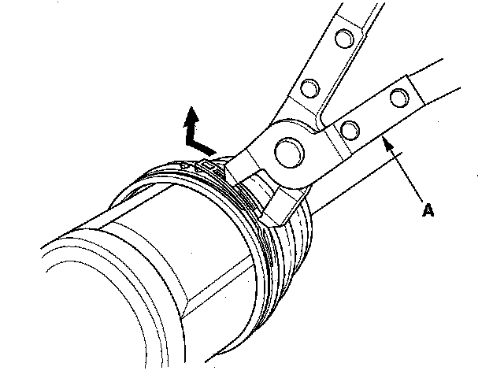
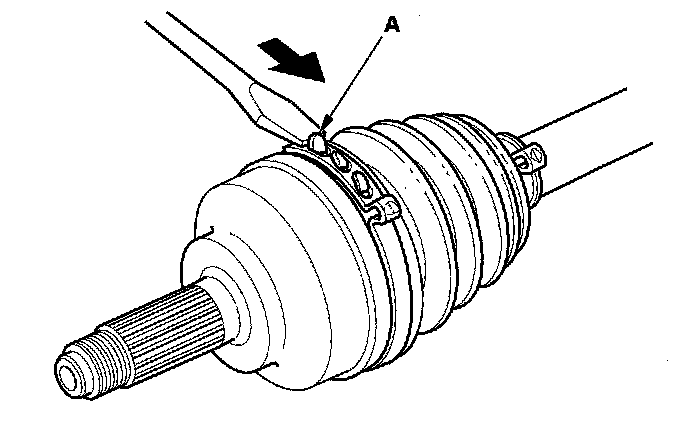
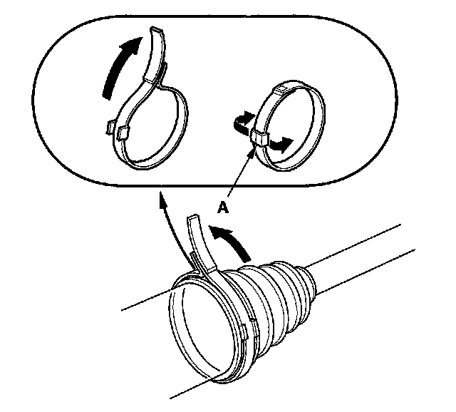

Boot Band Removal
Boot Band RemovalNOTE: When removing the boot bands, be careful not to damage the boot and dynamic damper.
Welded Type
1. Cut the boot band (A) then remove the boot band.

Double Loop Type
1. Lift up the band end (A) then push it into the clip (B) then remove the boot band.

Low Profile Type
1. Pinch the boot band using a commercially available boot band pliers (A) then remove the boot band.

Ear Clamp Type
1. Lift up the three tabs (A) with a screwdriver, then remove the boot band.

Locking Tab Type
1. Pry up the locking tab (A) with a screwdriver, and lift up the end of the band, then remove the boot band.
